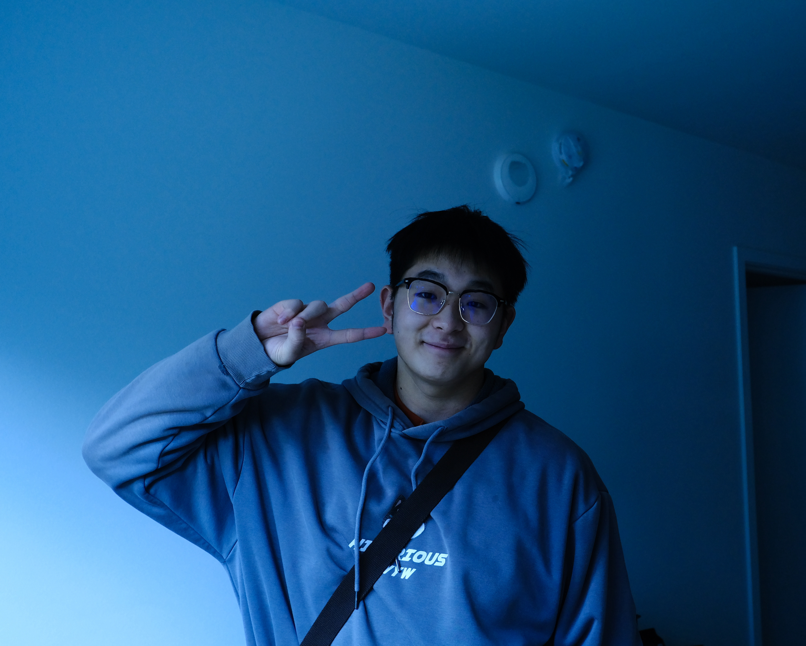

Master Student |
 |
Biography
I am a graduate student majoring in Electrical and Computer Engineering currently enrolled at the University of Washington in the United States. I earned dual Bachelor's degrees in Engineering through a collaborative program between the University of Electronic Science and Technology of China and the University of Glasgow. This unique academic background has not only enriched my knowledge but has also cultivated a global perspective and cross-cultural communication skills.
My primary academic interests lie in the fields of Computer Science and Software Engineering. Through both academic and practical experiences, I have successfully applied theoretical knowledge to real-world projects and participated in various software development initiatives. I possess a profound understanding of areas such as data structures, algorithm design, and database management, and I continually strive for further advancements in these domains.
Education & Experience
- University of Washington (2023.09 - 2025.06)
- University of Glasgow (dual degree with UESTC) (2019.09 - 2023.06)
Working Experience
-
Software Engineer Internship at Tencent [2024.06-2024.08]
Developed a system performance monitoring plugin for TencentOS -
Software Engineer Internship at China Mobile [2023.05-2023.08]
Built a service distribution function under the web server of the VPN device and implemented the monitoring module function with the DPU of the product -
Teaching Assistant at GEC Academy [2022.05-2023.02]
Assisted professors from UCL, Oxford, Stanford in completing the course content, and scheduled office hours to supplement knowledge for students
Extracurricular Activities
- President of History Museum at UESTC (2019.09 - 2021.06)
- Volunteer at Hand in Hand (2021.09 - 2021.11)
Honors & Awards
-
Edge Computing System Design for Interactive Robot in Intel Cup
-
Embedded Software System Design for Intelligent Robot